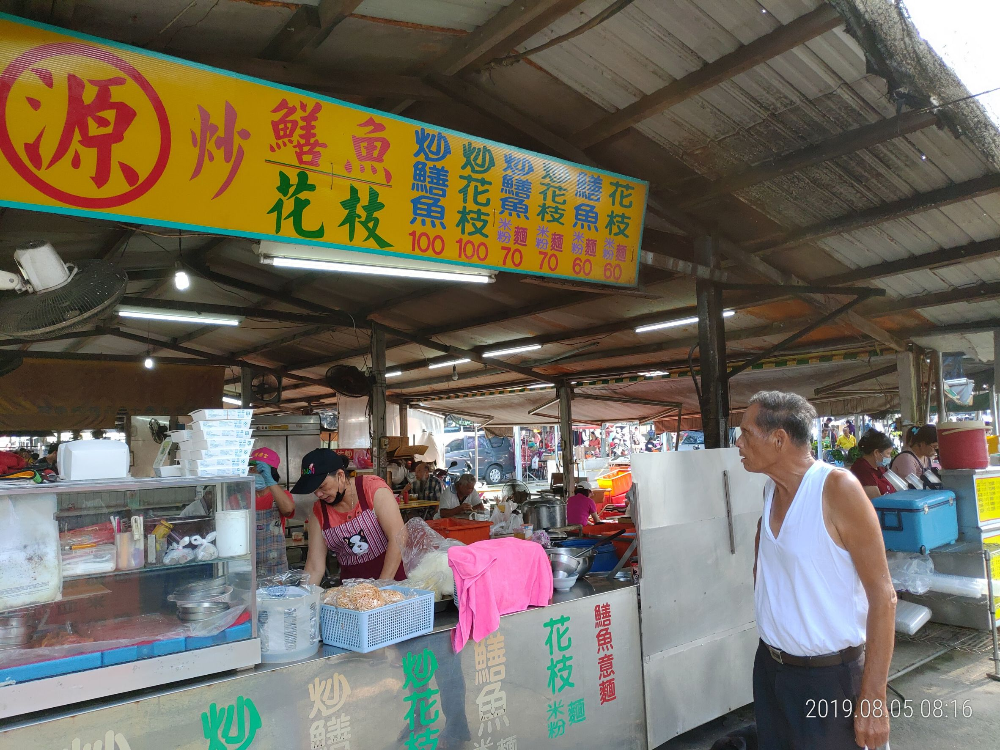
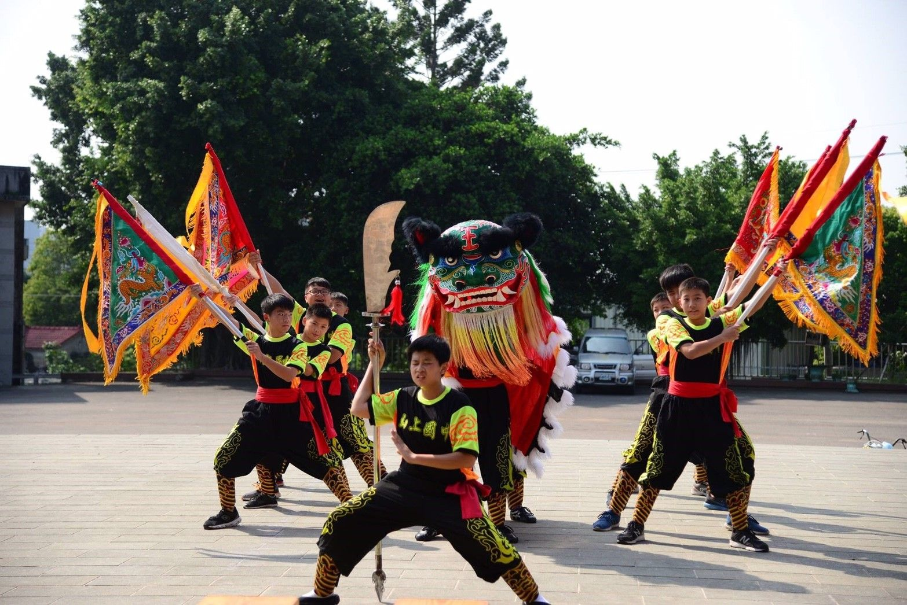

牛墟帶給我很多的回憶，從小到大，如果週末有牛墟，阿公一定會帶我一起逛。那裡有賣新鮮魚貨、蔬果、五金百貨以及各式各樣的小吃等應有盡有，而且價格都很便宜。


我雖然是善化人，但我畢業於
山上國中，因此對於山上區有一定的認識
，近幾年，越來越多人知道
山上花園水道博物館和
淨水池區
等日治時期的古蹟，非常值得造訪。
水道博物館、淨水池區簡介:
具有百年歷史的原臺南水道完工於1922年，歷時10年興建完成，佔地56公頃，是全國面積最大的國定古蹟。1982年功成身退的原臺南水道，這也是台灣最大的水道博物館。
當時因台南為僅次台北第二大城市，但飲水不良，疫癘肆虐，衛生設備遠遠落後，所以於1912年興建「台南水道」。台南水道淨水池和台南火車站集水區地位差60.2公尺，利用重力輸送水源。
淨水池區照片
山上國中傳統藝陣:舞獅，多次拿到全台南市第一名。

照片中的我擔任關刀手
山羊在山上國中是同學們的生命教育老師，同學會面臨到山羊的生與死，因此更珍稀當下所擁有的人、事、物。這是上課很難讓青春期的學生了解的。 現在山上國中約有20幾隻山羊，而山羊是由同學組成的羊舍志工來照顧，每天早上放羊，到了中午把羊牽回去，並清理羊舍。
想與山羊互動可以來山上國中體驗~